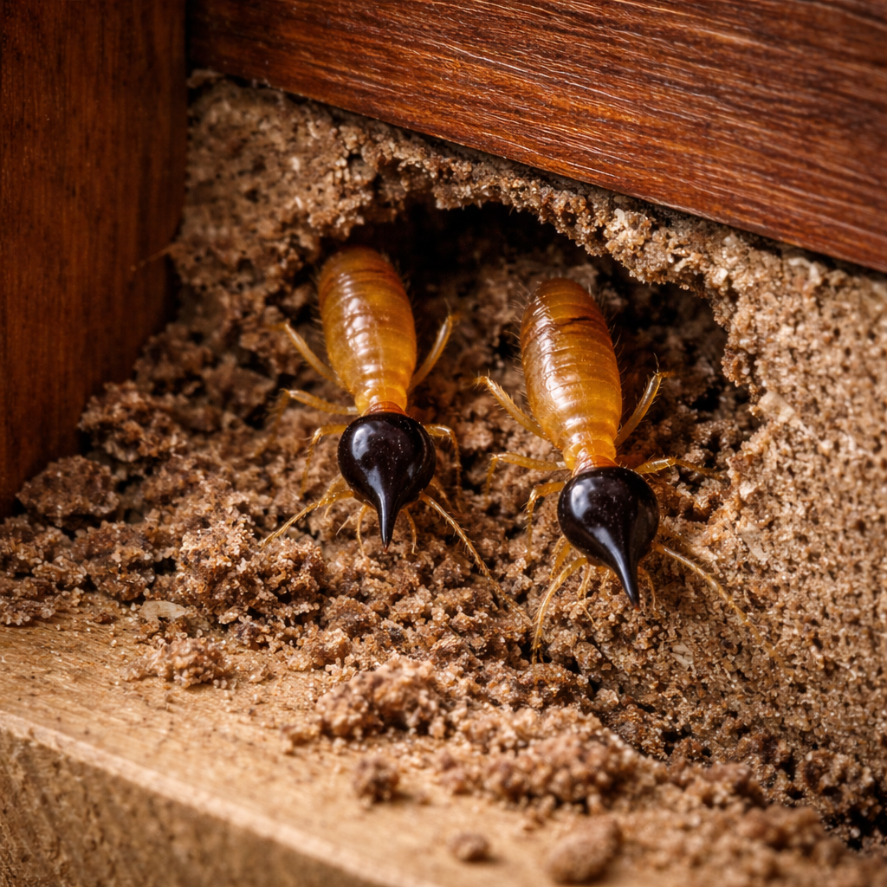

Comején Arbóreo

Descripción
El comején arbóreo es un tipo de termita que suele asociarse a
árboles, troncos y áreas exteriores. Puede construir nidos visibles
(tipo “bola” o masa de material parecido a cartón) en árboles, postes o estructuras cercanas,
y desde ahí moverse hacia madera disponible.
¿Por qué es importante?
- Puede formar colonias grandes y mantenerse activo gran parte del año.
- En condiciones favorables, puede acercarse a estructuras buscando madera y refugio.
- El daño puede avanzar sin notarse al principio (madera afectada internamente).
Señales comunes
- Nidos visibles en árboles, postes, aleros o áreas protegidas.
- Actividad cerca de madera con humedad o madera expuesta.
- Material tipo “cartón” o galerías/túneles en zonas de madera.
- Presencia de alados (termitas con alas) en ciertas épocas.
Daños y riesgos
- Debilitamiento de madera en áreas exteriores (fascias, marcos, cobertizos, aleros).
- Riesgo de expansión si hay humedad, grietas o madera accesible.
- Posible afectación de elementos de madera en interiores si encuentran ruta de acceso.
Prevención
- Reducir humedad en áreas de madera (drenaje, sellado, ventilación).
- Evitar madera en contacto directo con el suelo.
- Podar ramas que toquen techos o paredes (puentes de acceso).
- Revisar árboles cercanos por nidos o actividad.
Control Profesional
El control efectivo requiere inspección dirigida para identificar puntos de actividad,
evaluar riesgos a la estructura y aplicar un plan de manejo seguro y efectivo.
En Bugs Or Us PR trabajamos con responsabilidad y buenas prácticas,
priorizando siempre la seguridad de su familia, sus mascotas y el medio ambiente.
Solicitar Servicio Profesional
← Volver al Inicio